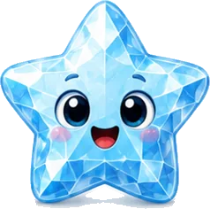
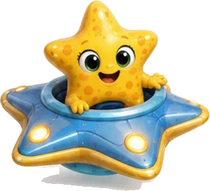
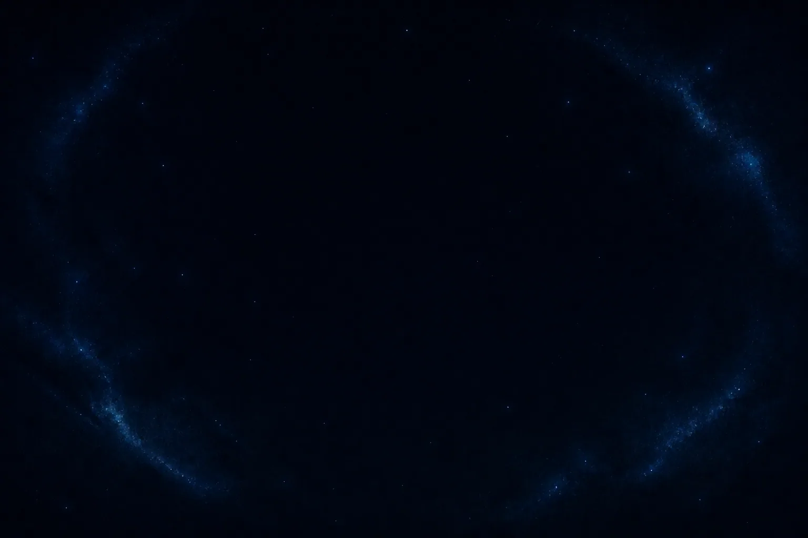
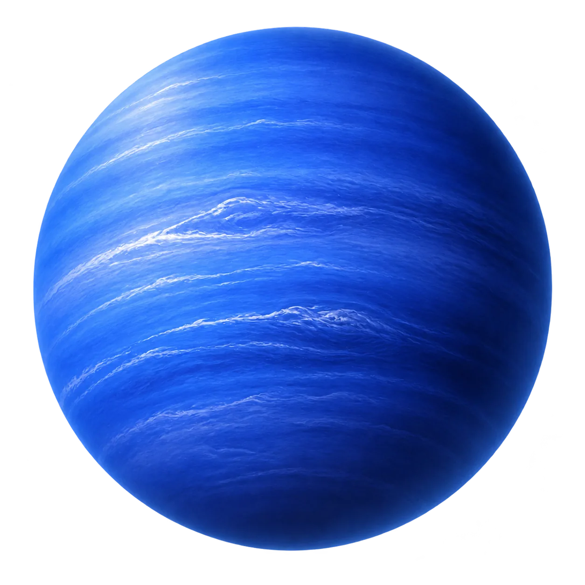
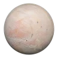
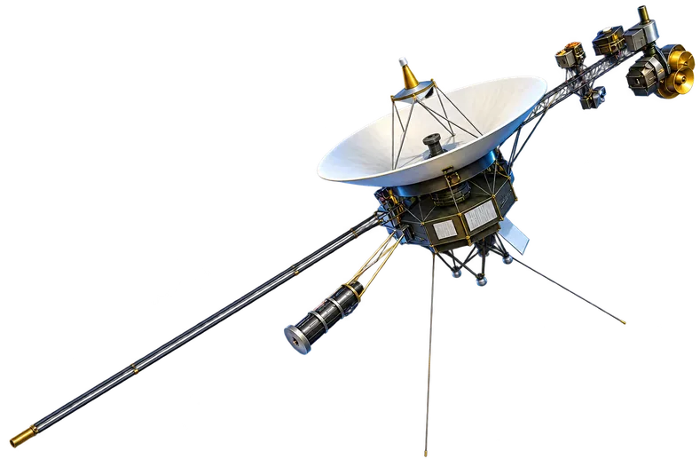
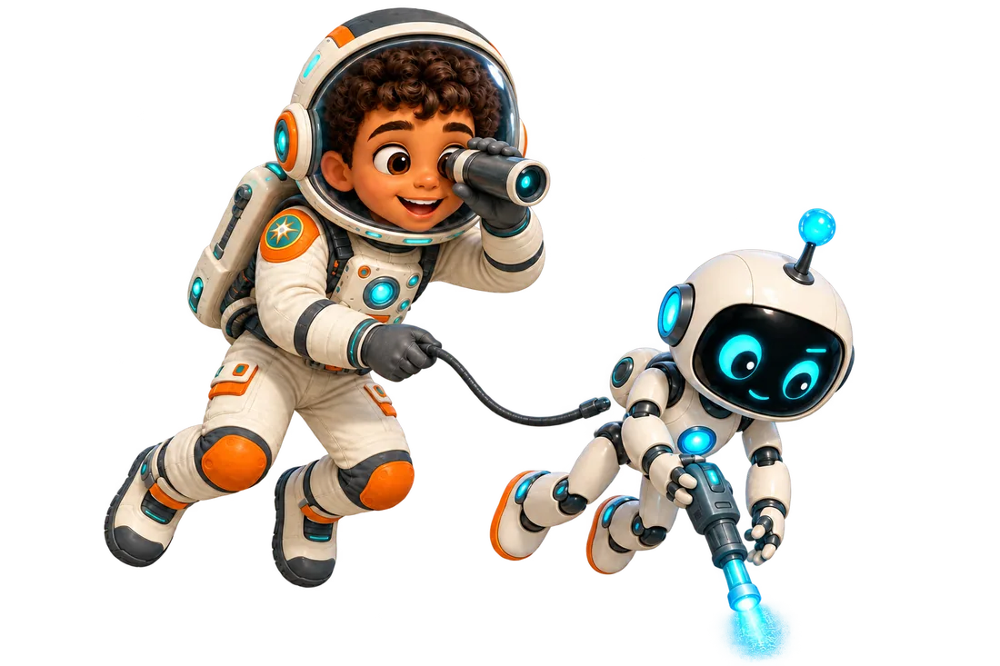

Page 18 · The backward moon
Triton
Far from home, a pale pink moon walks the other way around giant Neptune. Voyager 2 once flew past and saw dark streaks and icy fountains on this freezing world.


Tap a sparkling star on any page to meet a space friend and keep their sticker.



Far from home, a pale pink moon walks the other way around giant Neptune. Voyager 2 once flew past and saw dark streaks and icy fountains on this freezing world.


Tap the diagram to replay its motion. Diagrams are explanatory and not to scale.